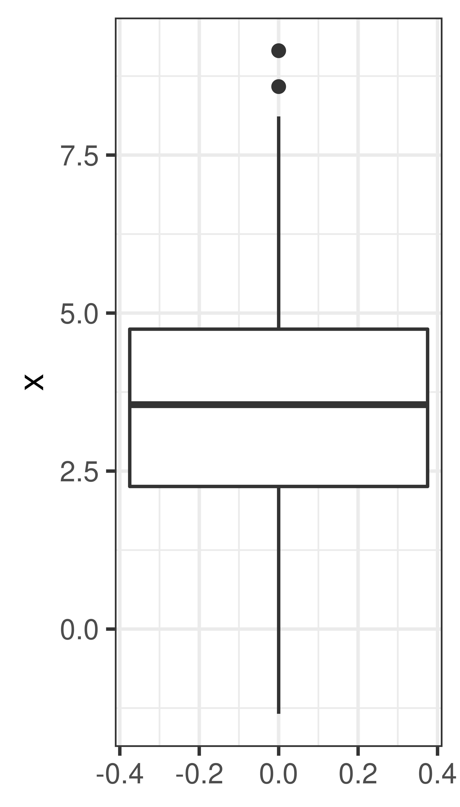

2 Descriptive statistics
Learning outcomes:
- be aware of data types
- compute measures of location, including mean and median
- compute measures of spread, including quantiles, variance and standard deviation
- understand the concept random sample
- compute population mean and variance
- compute sample mean and variance
2.1 Data types
- Categorical
- Nominal: named. Ex: dead/alive, healthy/sick, WT/mutant, AA/Aa/aa, male/female, red/green/blue
- Ordinal: named and ordered. Ex: pain (weak, moderate, severe), AA/Aa/aa, very young/young/middle age/old/very old, grade I, II, III, IV
Reported as frequencies, proportions, summarized using mode
- Quantitative (numeric)
- Discrete: finite or countable infinite values. Ex. counts, number of cells, number of reads
- Continuous: infinitely many uncountable values. Ex. height, weight, concentration
Useful summary statistics include mean, median, variance, standard deviation.
2.2 Measures of location
- Mode: the most common value, can be computed also for categorical data
- Median: The value that divide the ordered data values into two equally sized groups. 50% of the values are below the median.

- Mean: the arithmetic mean, also called the average
2.2.1 Expected value
The expected value of a random variable, or the population mean, is
\[\mu = E[X] = \frac{1}{N}\displaystyle\sum_{i=1}^N x_i,\] where the sum is over all \(N\) data points in the population.
The above formula is probably the most intuitive for finite populations, but for infinite populations other definitions can be used.
For a discrete random variable:
\[\mu = E[X] = \displaystyle\sum_{k=1}^K x_k p(x_k),\]
where the sum is taken over all possible outcomes.
For a continuous random variable:
\[\mu = E[X] = \int_{-\infty}^\infty x f(x) dx\]
2.2.1.1 Linear transformations and combinations
\[E(aX) = a E(X)\]
\[E(X + Y) = E(X) + E(Y)\]
\[E[aX + bY] = aE[X] + bE[Y]\]
Note, several very different distributions can still have the same mean value.
Figure 2.1: All these distributions have the same mean value, 3.50.
2.3 Measures of spread
Quartiles - the three values that divide the data values into four equally sized groups.
- Q1. First quartile. 25% of the values are below Q1. Divides the values below the median into equally sized groups.
- Q2.´ Second quartile. 50% of the values are below Q2. Q2 is the median.
- Q3. Third quartile. 75% of the values are below Q3. Divides the values above the median into equally sized groups.
- IQR: interquartile range: Q3 - Q1
- Variance, \(\sigma^2\). The variance is the mean squared distance from the mean value.
- Standard deviation, \(\sigma = \sqrt{\sigma^2}\).
2.3.1 Variance and standard deviation
The variance of a random variable, the population variance, is defined as
\[\sigma^2 = var(X) = E[(X-\mu)^2]\]
\[\sigma^2 = var(X) = \frac{1}{N} \sum_{i=1}^N (x_i-\mu)^2,\] where the sum is over all \(N\) data points in the population.
\[\sigma^2 = var(X) = E[(X-\mu)^2] = \left\{\begin{array}{ll} \displaystyle\sum_{k=1}^K (x_k-\mu)^2 p(x_k) & \textrm{if }X\textrm{ discrete} \\ \\ \displaystyle\int_{-\infty}^\infty (x-\mu)^2 f(x) dx & \textrm{if }X\textrm{ continuous} \end{array}\right.\]
Standard deviation
\[\sigma = \sqrt{var(X)}\]
2.3.1.1 Linear transformations and combinations
\[var(aX) = a^2 var(X)\]
For independent random variables X and Y
\[var(aX + bY) = a^2var(X) + b^2var(Y)\]
2.4 Random sample
In many (most) experiments it is not feasible (or even possible) to examine the entire population. Instead we study a random sample.
A random sample is a random subset of individuals from a population.
A simple random sample is a random subset of individuals from a population, where every individual has the same probability of being choosen.
Notation
A random sample \(x_1,x_2,\dots,x_n\) from a distribution, \(D\), consists of \(n\) observations of the independent random variables \(X_1, X_2,\dots,X_n\) all with the distribution \(D\).
2.4.1 The urn model to perform simple random sampling
Let every individual in the population be represented by a ball. The value on each ball is the measurement we are interested in, for example height, shoe size, hair color, healthy/sick, type of cancer/no cancer, blood glucose value, etc.
Draw \(n\) balls from the urn, without replacement, to get a random sample of size \(n\).
2.4.2 Sample properties
Summary statistics can be computed for a sample, such as the sum, proportion, mean and variance.
2.4.2.1 Sample proportion
The proportion of a population with a particular property is \(\pi\).
The number of individuals with the property in a simple random sample of size \(n\) is a random variable \(X\). The proportion of individuals in a sample with the property is also a random variable;
\[P = \frac{X}{n}\] with expected value \[E[P] = \frac{E[X]}{n} = \frac{n\pi}{n} = \pi\]
2.4.3 Sample mean and standard deviation
For a particular sample of size \(n\); \(x_1, \dots, x_n\), the sample mean is denoted \(m = \bar x\). The sample mean is calculated as;
\[m = \bar x = \frac{1}{n}\displaystyle\sum_{i=1}^n x_i\] and the sample variance as;
\[s^2 = \frac{1}{n-1} \sum_{i=1}^n (x_i-m)^2\]
Note that the mean of \(n\) independent identically distributed random variables, \(X_i\) is itself a random variable;
\[\bar X = \frac{1}{n}\sum_{i=1}^n X_i,\] If \(X_i \sim N(\mu, \sigma)\) then \(\bar X \sim N\left(\mu, \frac{\sigma}{\sqrt{n}}\right)\).
When we only have a sample of size \(n\), the sample mean \(m\) is our best estimate of the population mean. It is possible to show that the sample mean is an unbiased estimate of the population mean, i.e. the average (over many size \(n\) samples) of the sample mean is \(\mu\).
\[E[\bar X] = \frac{1}{n} n E[X] = E[X] = \mu\]
Similarly, the sample variance is an unbiased estimate of the population variance.
2.4.4 Standard error
Eventhough the sample can be used to calculate unbiased estimates of the population value, the sample estimate will not be perfect. The standard deviation of the sampling distribution (the distribution of sample estimates) is called the standard error.
For the sample mean, \(\bar X\), the variance is
\[E[(\bar X - \mu)] = var(\bar X) = var(\frac{1}{n}\sum_i X_i) = \frac{1}{n^2} \sum_i var(X_i) = \frac{1}{n^2} n var(X) = \frac{\sigma^2}{n}\] The standard error of the mean is thus;
\[SEM = \frac{\sigma}{\sqrt{n}}\] Replacing \(\sigma\) with the sample standard deviation, \(s\), we get an estimate of the standard deviation of the mean;
\[SEM \approx \frac{s}{\sqrt{n}}\] An alternative definition of standard error of the mean is actually
\[SEM = \frac{s}{\sqrt{n}}\]
Exercises: Descriptive statistics
Exercise 2.1 Data summary
Consider the below data and summarize each of the variables.
| id | smoker | baby weight (kg) | gender | mother weight (kg) | mother age | parity | married |
|---|---|---|---|---|---|---|---|
| 1 | yes | 2.8 | F | 64 | 21 | 2 | yes |
| 2 | yes | 3.2 | M | 65 | 27 | 1 | yes |
| 3 | yes | 3.5 | F | 64 | 31 | 2 | yes |
| 4 | yes | 2.7 | F | 73 | 32 | 0 | yes |
| 5 | yes | 3.3 | M | 59 | 39 | 3 | yes |
| 6 | no | 3.7 | F | 61 | 26 | 0 | no |
| 7 | no | 3.3 | F | 52 | 27 | 2 | no |
| 8 | no | 4.3 | F | 59 | 21 | 0 | no |
| 9 | no | 3.2 | M | 65 | 28 | 1 | no |
| 10 | no | 3.0 | M | 73 | 33 | 4 | yes |
Exercise 2.2 (Exercise in distribution of sample mean) The total cholesterol in population (mg/dL) is normally distributed with \(\mu = 202\) and \(\sigma = 40\).
- How is the sample mean of a sample of 4 persons distributed?
- What is the probability to see a sample mean of 260 mg/dL or higher?
- Is there reason to believe that the four persons with mean 260 mg/dL were sampled from another population with higher population mean?
Exercise 2.3 The amount of active substance in a pill is stated by the manufacturer to be normally distributed with mean 12 mg and standard deviation 0.5 mg. You take a sample of five pill and measure the amount of active substance to; 13.0, 12.3, 12.6, 12.5, 12.7 mg.
- Compute the sample mean
- Compute the sample variance
- Compute the sample standard deviation
- compute the standard error of mean, \(SEM\).
- If the manufacturers claim is correct, what is the probability to see a sample mean as high as in a) or higher?